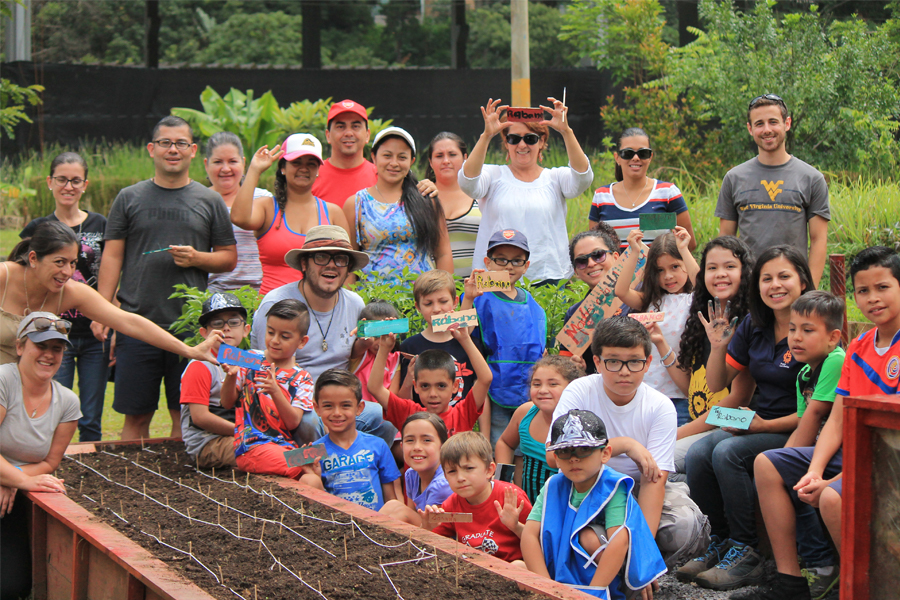

Actualmente nos encontramos trabajando en:
La creación de un bosque secundario de 6 hectáreas, que podrá ser un pulmón verde para el Valle Central.
La implementación de un jardín botánico comunitario de 3 hectáreas.
Programas de educación para la sostenibilidad, que llevan a la sensibilización y alfabetización ambiental de la población.
Atender la Gestión Ambiental con un enfoque socio-ecosistémico. Realizar la Educación y la Gestión Comunitaria basados en el Desarrollo Sostenible, y como centro de acción de la oferta programática que se realiza en el Centro de Gestión y Educación Ambiental (CEGEA).
El CEGEA fue inaugurado el 22 de abril del año 2016 como espacio de recuperación y fortalecimiento de la alfabetización y cultura ambiental en la sociedad, muy en particular en las comunidades en torno al Parque La Libertad.
Además vela por brindar oportunidades accesibles e inclusivas, y apoyar al fortalecimiento y desarrollo ambiental de las comunidades aledañas para alcanzar la sostenibilidad.
Por medio de la oferta especializada del CEGEA, se busca la transformación socio-ambiental de las personas y comunidades, por medio de:
Metodologías interactivas
Metodologías de reflexión
Experimentación e innovación